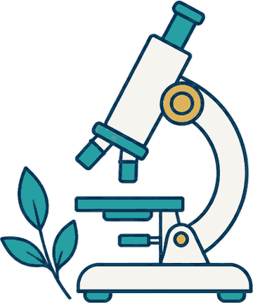
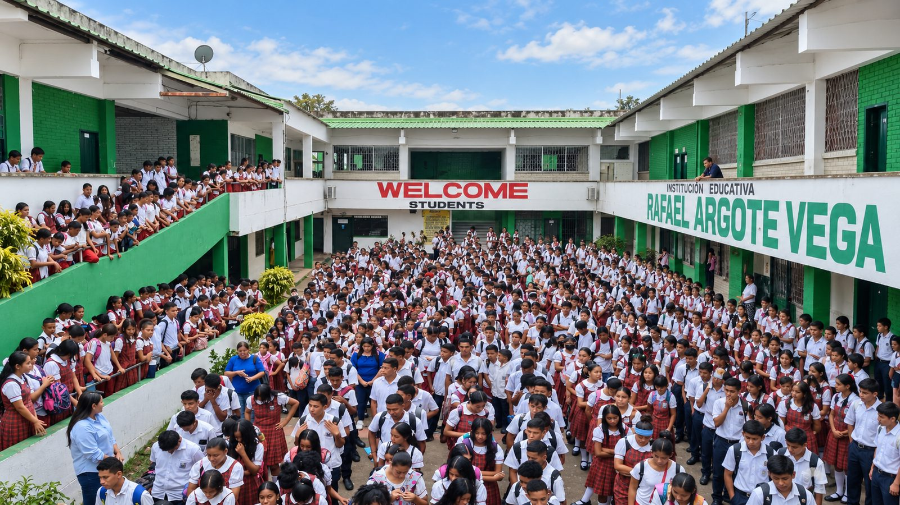

Educación con sentido humano, raíces en nuestra tierra y una mirada al futuro.
Misión
Somos una institución oficial y mixta que forma en valores éticos, morales y espirituales, para que cada estudiante crezca de manera armónica y construya su proyecto de vida.
Buscamos que sea analítico, crítico y reflexivo ante los problemas de su entorno, con miras a aportar soluciones para una mejor convivencia social.
Visión 2027
Nos proyectamos como la mejor institución de Chiriguaná en calidad educativa, sobresaliendo en las pruebas de Estado y caminando hacia la excelencia.
Comprometidos con la formación integral en alta calidad humana, sentido crítico, manejo de herramientas tecnológicas, investigación y cuidado del medio ambiente.
Los valores que nos sostienen
Ocho principios que la comunidad educativa acordó y que guían la convivencia diaria.
01
Respeto
Por las personas, sus valores, sus creencias, sus dificultades y su orientación sexual.
02
Compromiso
El deseo de superación constante, con la institución como facilitadora del proceso.
03
Ayuda mutua
La afirmación de la individualidad junto al esfuerzo de superación personal.
04
Solidaridad
Participar de forma consciente en acciones que mejoren el bienestar de la sociedad.
05
Honestidad
Decir siempre la verdad y cumplir los deberes con transparencia y rectitud.
06
Igualdad y equidad
La defensa de la igualdad de oportunidades y el respeto a la diversidad étnica y cultural.
07
Investigación
Espíritu de creación para enfrentar con muchas opciones los retos de la sociedad.
08
Paz y reconciliación
Capacidad de perdonar, conciliar y resolver conflictos dentro y fuera del colegio.
NUESTRA PROMESATradición que inspira. Educación que avanza.
Del jardín a once
Acompañamos a los estudiantes durante todo su recorrido escolar, en cuatro sedes del municipio.
01
Jardín
Preescolar
El primer encuentro con la vida escolar, en un entorno de cuidado y juego.
02
Transición
Preescolar
El año que prepara el paso a la primaria y afianza los primeros aprendizajes.
03
Básica Primaria
1.º a 5.º
La base: lectura, escritura, pensamiento matemático y convivencia.

04
Básica Secundaria
6.º a 9.º
Se amplían las áreas y crece la autonomía en el trabajo escolar.
05
Media Vocacional
10.º y 11.º
Los dos últimos años, con el servicio social obligatorio y la mirada puesta en el proyecto de vida.
La sede principal ofrece jornada única en básica secundaria y media. Las sedes de preescolar y primaria funcionan en jornada de la mañana, salvo la Sede N.º 5, que atiende en jornada única de jardín a quinto.

Desde 1925, parte de la historia de Chiriguaná
Iniciamos como Escuela Urbana de Niñas. Desde 2003 llevamos el nombre de Rafael Argote Vega, un docente que trabajó con los niños y jóvenes de la comunidad.
Nace como Escuela Urbana de Niñas, en la Calle Bolívar, donde hoy está la Casa de la Cultura.
Durante sus primeras décadas atendió exclusivamente a la población femenina de la localidad, y el edificio se fue modificando para albergar una matrícula que no paraba de crecer.
Se inaugura la planta física propia de la escuela.
La mandó construir el gobernador del Magdalena, departamento al que pertenecía Chiriguaná en esa época.
Por orden gubernamental se constituye en Escuela Urbana Mixta N.º 2 y abre sus puertas a toda la población.
El cambio buscaba atender mejor a una población estudiantil que crecía rápido en el municipio y sus alrededores.
Abre el grado sexto y comienza la básica secundaria, para que los jóvenes de la región no tuvieran que irse.
La idea era proyectar el colegio a nuevos horizontes para el sector menos favorecido de la región, al que le resultaba muy difícil entrar a otros centros educativos.
La oferta llega hasta noveno grado, del preescolar en adelante.
Faltaban todavía la media vocacional y el grado once, que llegarían con la conversión en institución educativa tres años después.
La Resolución 350 del 9 de octubre le da el nombre de Rafael Argote Vega, en honor al docente que sirvió a los niños y jóvenes de la comunidad.
La institución quedó conformada por la Escuela Urbana Mixta N.º 1, la Escuela Urbana de Niñas N.º 5 Nuestra Señora de Chiquinquirá y la Escuela Urbana Mixta N.º 6 Campo Soto.
Primera jornada electoral entre sedes para elegir personero estudiantil.
Votaron los estudiantes desde cuarto grado. El primer personero fue José Javier Díaz Quiroz, de noveno, y su trabajo marcó el camino de los que vinieron después.
Primera promoción: 17 jóvenes reciben su diploma de bachiller.
Con esa promoción la institución vio materializados sus esfuerzos por brindar un servicio educativo completo.
Proyectos transversales
Siete proyectos que atraviesan todas las áreas y acompañan el desarrollo físico, intelectual, afectivo y moral de cada estudiante.
PRAEProyecto Ambiental Escolar: cuidado y conservación del entorno.
Competencias ciudadanasFormación para la participación y la vida en comunidad.
Orientación sexual e identidad de géneroAcompañamiento desde el respeto y la diversidad.
Educación para la justicia y la pazResolución de conflictos en el colegio, la familia y el barrio.
Aprovechamiento del tiempo libreCultura, deporte y recreación como parte de la formación.
Educación vialMovilidad segura y responsable dentro y fuera del colegio.
PILEOProyecto institucional de lectura, escritura y oralidad.
Los estudiantes de 10.º y 11.º cumplen además 100 horas de servicio social obligatorio, apoyando actividades académicas, deportivas y culturales de la institución.
Noticias
Conoce lo más reciente de nuestra vida institucional.